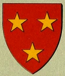

46944 Arthur Sinclair
* omkring 1452 Roslin Castle, Midlothian, Scotland
* omkring 1452 Roslin Castle, Midlothian, Scotland
93888 Sir William Sinclair 1st Earl of Caithness
* omkring 1410 Caithmess, Scotland
† 1484 Kirkcaldy, Scotland
Baron, Lord, Earl
Blev ca 74 år
* omkring 1410 Caithmess, Scotland
† 1484 Kirkcaldy, Scotland
Baron, Lord, Earl
Blev ca 74 år

187776 Sir Henry II Sinclair, Earl of Orkney
* omkring 1375 Rosslyn Castle, Edinburgh, Scotland
† 1422 Orkney Islands, Scotland
Greve av Orkneyöarna
Blev ca 47 år
* omkring 1375 Rosslyn Castle, Edinburgh, Scotland
† 1422 Orkney Islands, Scotland
Greve av Orkneyöarna
Blev ca 47 år
375552 Earl Henry I Sinclair, Earl of Orkney
* 1345 Rosslyn Castle, Edinburgh, Scotland
† omkring 1400 Orkney Islands, Scotland
Greve av Orkneyöarna
Blev ca 55 år
* 1345 Rosslyn Castle, Edinburgh, Scotland
† omkring 1400 Orkney Islands, Scotland
Greve av Orkneyöarna
Blev ca 55 år

375553 Jean Halyburton
* omkring 1350 Dirleton, East Lothian, Scotland
† 1400 Midlothian, Scotland
Blev ca 50 år
* omkring 1350 Dirleton, East Lothian, Scotland
† 1400 Midlothian, Scotland
Blev ca 50 år

187777 Lady Egidia Jill Douglas
* 1380 Nithsdale, Dumfries-shire Scotland
† 1438 Orkney Islands, Scotland
Blev högst 58 år
* 1380 Nithsdale, Dumfries-shire Scotland
† 1438 Orkney Islands, Scotland
Blev högst 58 år
375554 Sir William Douglas, Lord of Nithsdale
* omkring 1364 Nithsdale, Dumfries-shire Scotland
† 1392 Dumfries-shire, Scotland
Lord
Blev ca 28 år
* omkring 1364 Nithsdale, Dumfries-shire Scotland
† 1392 Dumfries-shire, Scotland
Lord
Blev ca 28 år

375555 Princess Egidia Stewart of Lounane, Princess of Scotland
* omkring 1368 Dundonald Castle, Ayrshire, Scotland
† omkring 1388 Scotland
Prinsessa av Scotland
Blev ca 20 år
* omkring 1368 Dundonald Castle, Ayrshire, Scotland
† omkring 1388 Scotland
Prinsessa av Scotland
Blev ca 20 år

93889 Lady Marjory Sutherland
* omkring 1436 Dunbeath, Caithness, Scotland
† mellan 1476 och 1480 Dunbeath, Caithness, Scotland
Blev ca 43 år
* omkring 1436 Dunbeath, Caithness, Scotland
† mellan 1476 och 1480 Dunbeath, Caithness, Scotland
Blev ca 43 år

187778 Alexander Sutherland of Dunbeath
* omkring 1395 Dunlichtie, Dunbeath castle, Iverness, Scotland
† 1456 Roslin Castle, Midlothian, Scotland
Blev ca 61 år
* omkring 1395 Dunlichtie, Dunbeath castle, Iverness, Scotland
† 1456 Roslin Castle, Midlothian, Scotland
Blev ca 61 år
375556 6th Earl of Sutherland Robert Sutherland
* 1347 Golspie, Sutherland, Scotland
† 1427 Dunrobin castle, Golspie, Sutherland, Scotland
Blev högst 80 år
* 1347 Golspie, Sutherland, Scotland
† 1427 Dunrobin castle, Golspie, Sutherland, Scotland
Blev högst 80 år

375557 Lady Margaret Stewart (Grevinna av Sutherland)
* 1373 Lochindorb castle, Badenoch, Scotland
† 1439 Trieve castle, Galloway, Wigtonshire, Scotland
Grevinna
Blev högst 66 år
* 1373 Lochindorb castle, Badenoch, Scotland
† 1439 Trieve castle, Galloway, Wigtonshire, Scotland
Grevinna
Blev högst 66 år

187779 Mariotta MacDonald of the Isles
* omkring 1415 Tulloch Castle, Dinwall, Scotland
† före 1448-07-20
Blev ca 33 år
* omkring 1415 Tulloch Castle, Dinwall, Scotland
† före 1448-07-20
Blev ca 33 år
375558 Lord Donald MacDonald of the Isles
* 1359 Islay, Scotland
† 1423 Islay, Scotland
Lord of the Isles
Blev högst 64 år
* 1359 Islay, Scotland
† 1423 Islay, Scotland
Lord of the Isles
Blev högst 64 år

375559 Countesse Mariota Leslie of Ross
* omkring 1365 Dundonald Castle, Ayrshire, Scotland
† 1435 Scotland
Grevinna av Ross
Blev ca 70 år
* omkring 1365 Dundonald Castle, Ayrshire, Scotland
† 1435 Scotland
Grevinna av Ross
Blev ca 70 år